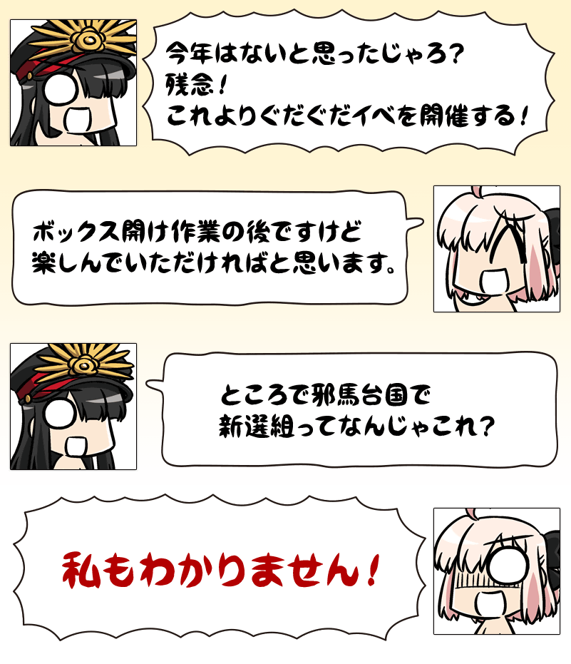
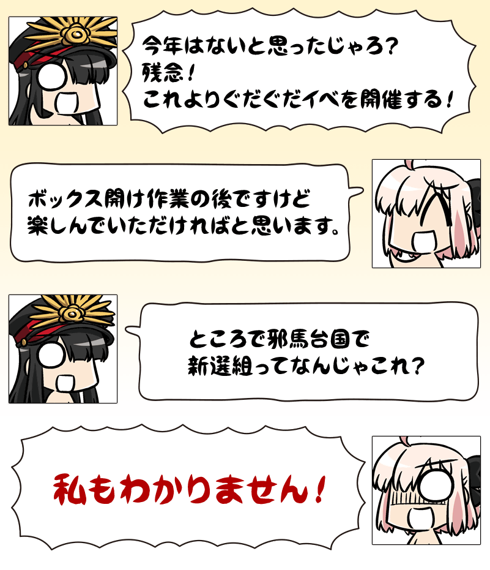

期間限定イベント「超古代新選組列伝 ぐだぐだ邪馬台国2020」開催！
謎の埴輪から発せられた光に包まれて、たどり着いた先は邪馬台国！？
荒れ果てた邪馬台国を復興させながら、迫りくる巨大な闇に立ち向かいましょう！
本イベントではストーリーが楽しめるメインクエストが特定の日時に開放されるほか、10月13日(火) 18:00には、イベント参加中のマスター全員で強敵に挑む、特殊な形式のクエストが開放されます！
※本ページの画像はすべて開発中のものです。実際の画像とは異なる場合があります。 ※一部のクエストは後日開放されます。
◆イベント開催期間◆
2020年10月9日(金) 20:00～10月23日(金) 12:59まで
◆イベント参加条件◆
以下の条件を満たしたマスターが参加可能
・「特異点F 炎上汚染都市 冬木」をクリア
◆サーヴァントの真名に関するご注意◆
2019年1月1日(火) 0:00以降に新たに配信されるメインストーリー、期間限定イベント、一部クエスト、キャンペーンおよび召喚では、真名隠し対象サーヴァントの真名が表示されます。
※2018年12月31日(月) 23:59時点で、既に配信済みのメインストーリー、復刻イベント、一部クエストにおいてはこの限りではございません。
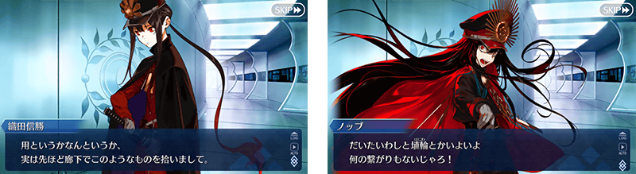
「Fate/Grand Order」公式サイト内トップページおよびギャラリーにて、期間限定イベント「超古代新選組列伝 ぐだぐだ邪馬台国 2020」告知CMフルver.を公開しております。
あわせてご確認ください。
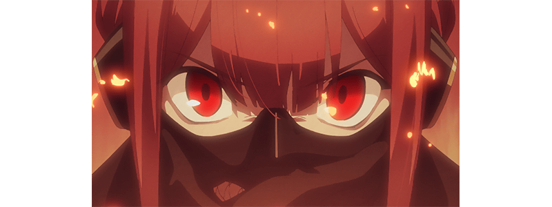
アニメーション制作：A-1 Pictures

 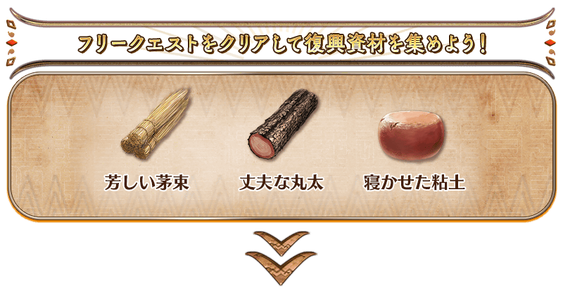
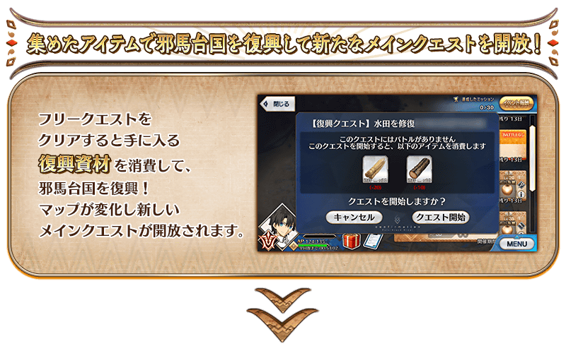
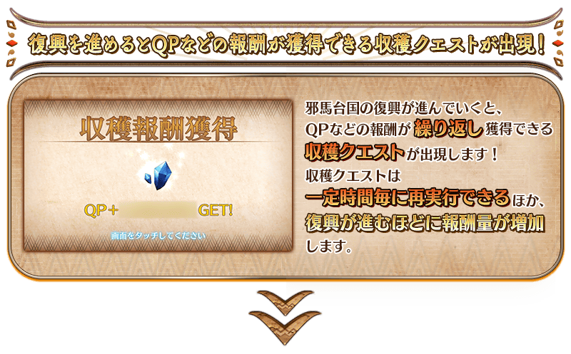
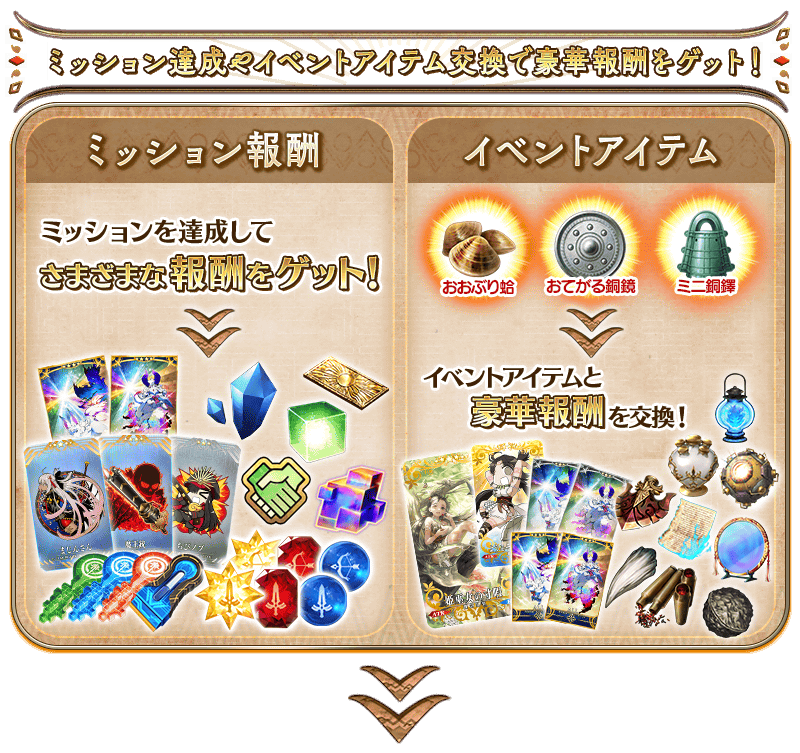
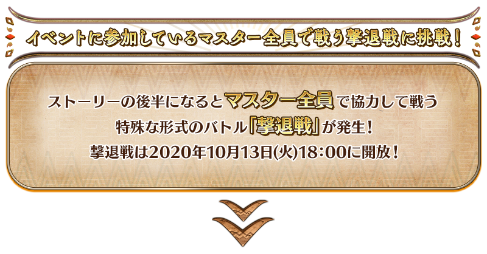
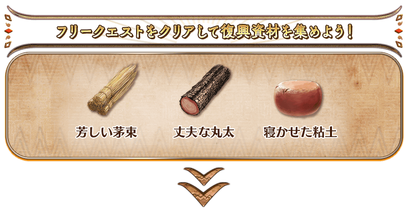
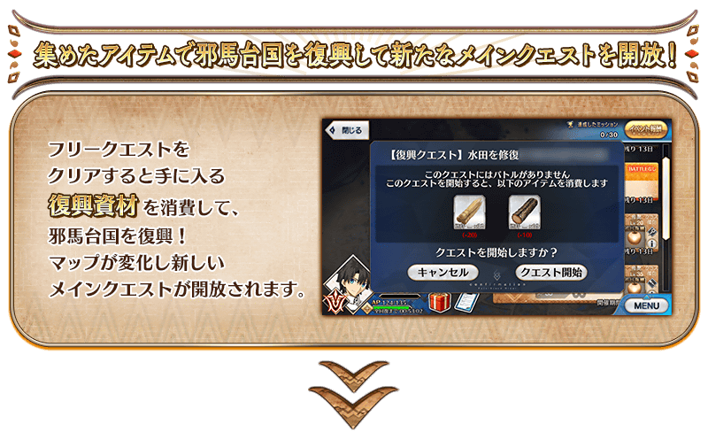
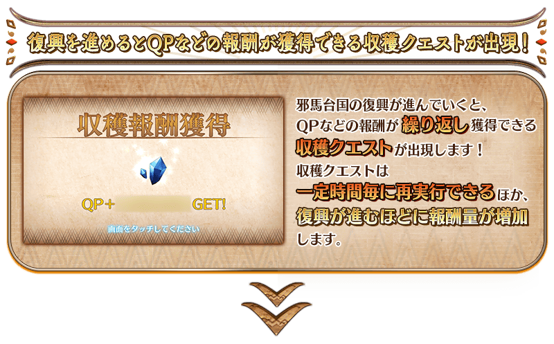
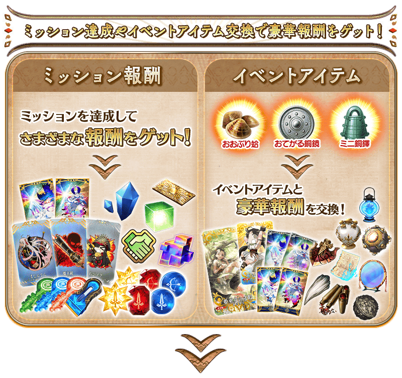
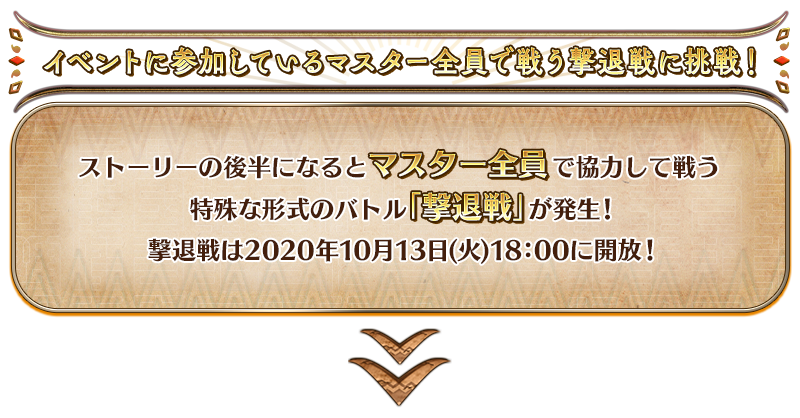

ストーリーを楽しめるメインクエストは下表のスケジュールで開放されます。
メインクエストを進めていくことで、イベントアイテムを集められるフリークエストが開放されます。
以降のフリークエストは、メインクエストやフリークエストをクリアしていくことで開放されます。
【クエストの開催期間】
| クエストの種類 | 開催期間 |
|---|---|
| プロローグ～メインクエスト第二節 |
2020年10月9日(金) 20:00～ 10月23日(金) 12:59 |
| メインクエスト第三節～第四節 |
2020年10月10日(土) 18:00～ 10月23日(金) 12:59 |
| メインクエスト第五節～第六節 |
2020年10月11日(日) 18:00～ 10月23日(金) 12:59 |
| メインクエスト第七節～エピローグ |
2020年10月13日(火) 18:00～ 10月23日(金) 12:59 |
※一部のメインクエストは、2020年10月13日(火)18:00以降に開放される「とどめ戦」をクリアすることで開放されます。

期間限定イベント「超古代新選組列伝 ぐだぐだ邪馬台国2020」では、「特定のアイテムを一定数以上集める」「特定のエネミーを倒す」など、さまざまな条件を達成することで、豪華報酬を獲得できるミッションが発生します！
また、ミッションの達成状況に応じて新たなミッションが開放されていきます。
ミッションをクリアして、達成報酬を獲得しつつメインクエストを進めましょう！
※クリア条件を満たしただけでは、報酬は獲得できませんのでご注意ください。 ※ミッション報酬を受け取らないと、新たなミッションなどが開放されないことがありますのでご注意ください。
荒れ果てた集落を復興させよう！
本イベントのメインクエストを進めていくと、邪馬台国を復興させるための「復興クエスト」が出現していきます。
フリークエストをクリアすることで入手できる復興資材「芳しい茅束」「丈夫な丸太」「寝かせた粘土」を消費することで、邪馬台国を復興させることができます。
復興が進むと新たなメインクエストが開放！
さらに収穫クエストで得られる報酬が増加します。
※収穫クエストが実行可能な状態で復興クエストを完了すると、収穫可能になっていた報酬が失われるほか、収穫が実行可能になるまでの時間もリセットされるのでご注意ください。

復興した集落で資源を収穫！
シナリオが進行し邪馬台国の復興が進むと、収穫クエストが出現します。収穫クエストは、一定時間おきに何度でも実行することが可能で、フレンドポイントやQPなどを獲得できます。
収穫時の報酬は、復興クエストをクリアして邪馬台国の復興を進めるほど増加していきます。
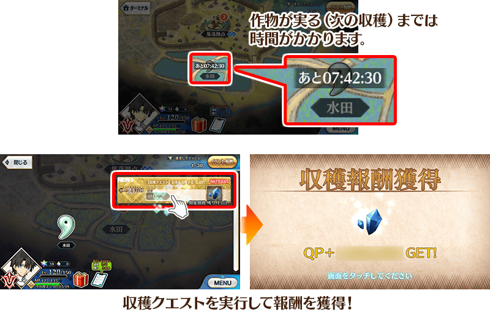
◆収穫クエストの｢収穫通知｣について◆
「収穫通知」をONにした状態でアプリを終了すると、収穫クエストが実行可能になった際に、プッシュ通知が届くようになります。
※本機能をご利用になる際は、ご使用の端末においてアプリからの通知を受け取れるよう設定の変更をお願いいたします。本機能をONにした状態でも、ご使用の端末にて通知を受け取らない設定になっている場合、プッシュ通知は表示されません。
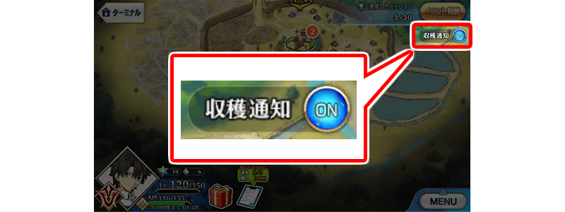
メインクエストを進めると、イベントに参加中のマスター全員で巨大なエネミーを撃退するという特殊な形式でのバトルが発生します。
このバトルに出現するエネミーにはそれぞれ専用のゲージがあり、クエストでHPを0にするごとに少しずつ減らすことができます。
専用のゲージはすべてのマスターで共有しており、マスター全員でバトルを何度もクリアして、ゲージを減らしきればエネミーを撃退することが可能です。
巨大なエネミーのゲージを減らしきったあとは「とどめ戦」が発生し、すべてを撃破するとストーリーを先に進めることができます。
何度もバトルに挑戦して、巨大なエネミーの撃退を目指しましょう！
※バトルで全滅しても、令呪3画か聖晶石1個を使用してコンティニューすることができます。 ※専用のゲージを減らしきった時点でバトルは終了し、それ以降は参戦できなくなります。
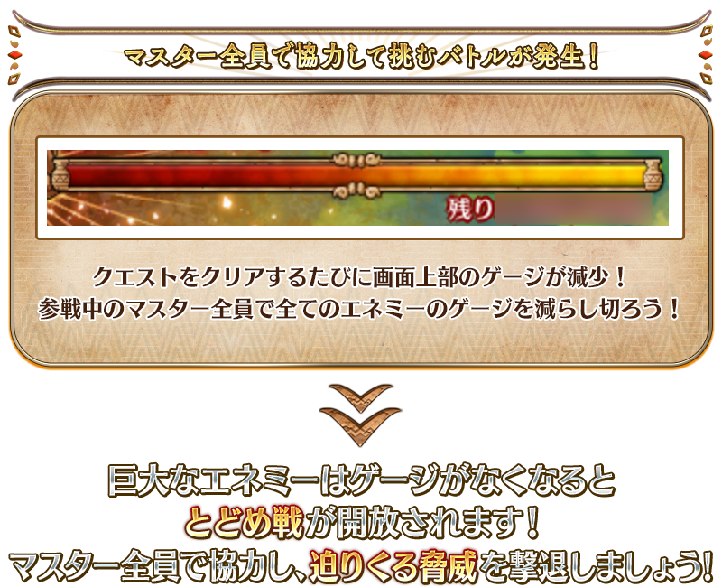
※各エネミーのゲージを減らしきったあと、とどめ戦の開放には若干の時間を要する場合がございます。 ※巨大なエネミーを制限時間内に撃退できなかった場合、一部のミッション報酬が受け取れなくなってしまいますので、あらかじめご注意ください。

本イベントの期間中、期間限定でフレンドポイント召喚が「期間限定ぐだぐだ邪馬台国2020フレンドポイント召喚」になります。
「期間限定ぐだぐだ邪馬台国2020フレンドポイント召喚」からは、通常のフレンドポイント召喚から排出されるものに加え、概念礼装を大幅に強化できるEXPカード「★4(SR)ようこそ邪馬台国！」「★3(R)猛者と無敵」が排出されるようになります。
この機会に概念礼装EXPカードを入手し、概念礼装を強化しましょう！
◆「期間限定ぐだぐだ邪馬台国2020フレンドポイント召喚」期間◆
2020年10月9日(金) 20:00～10月23日(金) 12:59まで
◆「期間限定ぐだぐだ邪馬台国2020フレンドポイント召喚」に関するご注意◆
※2020年10月9日(金) 20:00～10月23日(金) 12:59までの期間、通常のフレンドポイント召喚が「期間限定ぐだぐだ邪馬台国2020フレンドポイント召喚」に変わります。
※期間中、通常のフレンドポイント召喚をおこなうことはできません。
※下記の概念礼装は、2020年10月23日(金) 12:59までの期間「期間限定ぐだぐだ邪馬台国2020フレンドポイント召喚」でも獲得可能です。
・★3(R)金色ノ原
※自動変還設定にて★3(R)の概念礼装を登録している場合、下記の概念礼装は自動変還の対象となりますのでご注意ください。
・★3(R)金色ノ原
・★3(R)猛者と無敵
お得な攻略方法･その1
本イベントの期間中、下表のサーヴァントはイベントクエストにおいて、「イベントアイテムのドロップ獲得数がアップ」と「自身の攻撃の威力がアップ」と「絆ポイント獲得量がアップ」のボーナスが得られます！
対象のサーヴァントを強化して、イベントに挑みましょう！
※イベントボーナスの効果量はサーヴァントによって異なります。 ※マシュ･キリエライトの「絆ポイント獲得量がアップ」効果は、「控えを含む味方全体の絆ポイント獲得量がアップ」という効果になります。この効果はサポート時は無効となります。
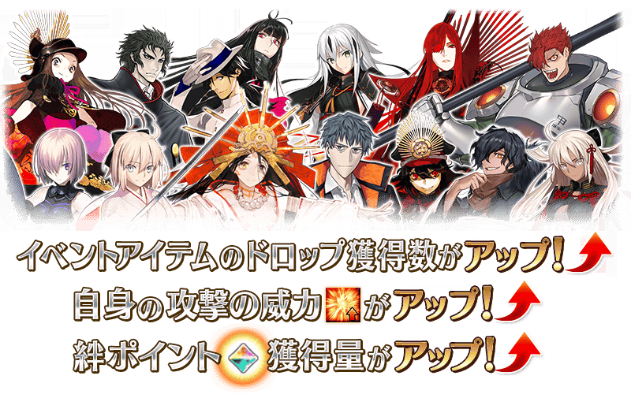
【イベントボーナスの効果と対象サーヴァント】
| 自身の 攻撃の 威力 |
絆 ポイント 獲得量 |
クラス | レアリティ | サーヴァント名 |
|---|---|---|---|---|
| ＋100％ |
自身のみ ＋50% |
セイバー | ★★★★ | 斎藤一 |
| ルーラー | ★★★★★ | 卑弥呼 | ||
| ＋50％ |
自身のみ ＋20% |
セイバー | ★★★★★ | 沖田総司 |
| アーチャー | ★★★★ | エミヤ | ||
| ★★★★ | 織田信長 | |||
| ランサー | ★★★★ | 長尾景虎 | ||
| ライダー | ★★★★ | 坂本龍馬 | ||
| ★★★ | メドゥーサ | |||
| アサシン | ★★★★★ | 謎のヒロインX | ||
| ★★★★★ | 李書文 | |||
| ★★★ | 岡田以蔵 | |||
| バーサーカー | ★★★★★ | 土方歳三 | ||
| ★★★★ | 茶々 | |||
| ★★★ | 森長可 | |||
| アヴェンジャー | ★★★★★ | 魔王信長(織田信長) | ||
| アルターエゴ | ★★★★★ | 沖田総司〔オルタ〕 | ||
|
味方全体 ＋5% |
シールダー | ★★★ | マシュ･キリエライト | |
| ＋30％ |
自身のみ ＋20% |
アーチャー | ★★★★★ | ギルガメッシュ |
| ★★★ | 俵藤太 | |||
| ライダー | ★★★ | クリストファー･コロンブス(レジスタンスのライダー) | ||
| ★★★ | 赤兎馬 | |||
| キャスター | ★★★★ | キルケー(オケアノスのキャスター) | ||
| ★★★ | アヴィケブロン | |||
| ★★★ | メディア | |||
| ★★ | 陳宮 | |||
| アサシン | ★★★★ | オキタ･J･ソウジ | ||
| バーサーカー | ★★★★ | 織田信長 | ||
| ★★★ | 呂布奉先 | |||
| アヴェンジャー | ★★★★★ | スペース･イシュタル |
【ドロップ獲得数がアップするアイテムと対象サーヴァント】
| イベントアイテム | クラス | レアリティ | サーヴァント名 | |
|---|---|---|---|---|


|
芳しい茅束+1 丈夫な丸太+1 寝かせた粘土+1 | セイバー | ★★★★ | 斎藤一 |
| ルーラー | ★★★★★ | 卑弥呼 | ||
|
|
芳しい茅束+1 | セイバー | ★★★★★ | 沖田総司 |
| ライダー | ★★★★ | 坂本龍馬 | ||
| ★★★ | クリストファー･コロンブス(レジスタンスのライダー) | |||
| ★★★ | 赤兎馬 | |||
| ★★★ | メドゥーサ | |||
| バーサーカー | ★★★★★ | 土方歳三 | ||
| ★★★★ | 織田信長 | |||
| ★★★★ | 茶々 | |||
| ★★★ | 森長可 | |||
| ★★★ | 呂布奉先 | |||
|
|
丈夫な丸太+1 | アーチャー | ★★★★★ | ギルガメッシュ |
| ★★★★ | エミヤ | |||
| ★★★★ | 織田信長 | |||
| ★★★ | 俵藤太 | |||
| キャスター | ★★★★ | キルケー(オケアノスのキャスター) | ||
| ★★★ | アヴィケブロン | |||
| ★★★ | メディア | |||
| ★★ | 陳宮 | |||
| アヴェンジャー | ★★★★★ | スペース･イシュタル | ||
| ★★★★★ | 魔王信長(織田信長) | |||
| 寝かせた粘土+1 | ランサー | ★★★★ | 長尾景虎 | |
| アサシン | ★★★★★ | 謎のヒロインX | ||
| ★★★★★ | 李書文 | |||
| ★★★★ | オキタ･J･ソウジ | |||
| ★★★ | 岡田以蔵 | |||
| アルターエゴ | ★★★★★ | 沖田総司〔オルタ〕 | ||
| シールダー | ★★★ | マシュ･キリエライト | ||
※対象のサーヴァントとなっていても、本イベントのメインシナリオに登場しない場合があります。 ※10月9日(金) 20:00より、サーヴァント選択画面やサーヴァント強化画面などに、イベントボーナスフィルターが追加されております。イベントで活躍するサーヴァントのみを表示する便利な機能となりますので、こちらもあわせてご活用ください。 ※「★5(SSR)魔王信長(織田信長)」は「★5(SSR)織田信長」を霊基再臨第3段階にすることで名称が「★5(SSR)魔王信長」に変化します。
お得な攻略方法･その2
イベント限定概念礼装と期間限定概念礼装を装備すると、イベントにおいてさまざまな恩恵を受けられます。
イベント限定概念礼装を装備して自身の攻撃の威力がアップ！
イベントアイテム交換で入手できるイベント限定概念礼装「★5(SSR)姫巫女の寸暇」を装備することで、期間限定イベント「超古代新選組列伝 ぐだぐだ邪馬台国2020」のイベントクエストにおける自身の攻撃の威力がアップします。
また、聖晶石召喚にてピックアップされる期間限定概念礼装「★5(SSR)誠の蛍火」「★4(SR)晴れの日」「★3(R)金色ノ原」を装備することで、イベントアイテム「おおぶり蛤」「おてがる銅鏡」「ミニ銅鐸」それぞれのドロップ獲得数がアップします。
※各クエストでのアイテムドロップ率は100％ではございませんのでご注意ください。
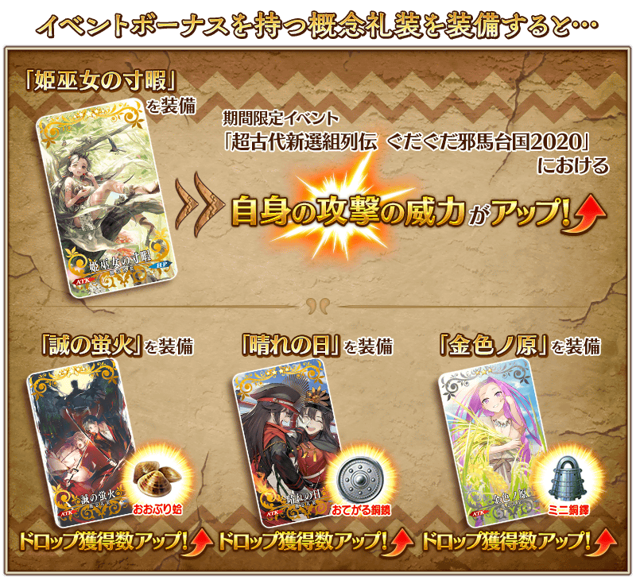

| 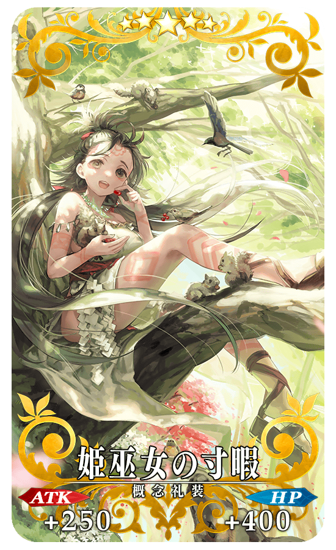 |
★★★★★SSR 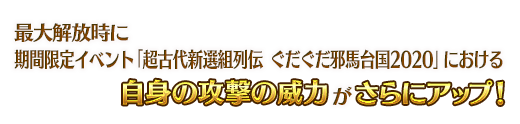 |


|
【イベント限定】 |

|
★★★★SR |
| 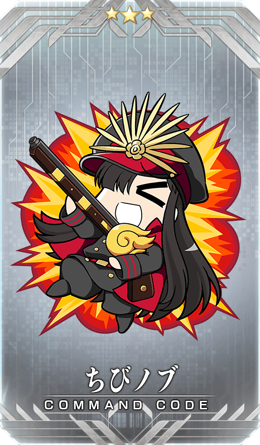 |
★★★R |
イベントアイテムは、ターミナル画面右上の「イベント報酬」ボタンをタッチすると表示される「イベントアイテム交換」画面より、以下のアイテムと交換できます。
※英霊結晶･流星のフォウくんALL★4(HP)、英霊結晶･日輪のフォウくんALL★4(ATK)については、後日開放される本イベントを進行すると交換可能になります。
◆交換期間◆
2020年10月9日(金) 20:00～10月30日(金) 12:59まで
※イベントアイテム交換期間終了後「おおぶり蛤」「おてがる銅鏡」「ミニ銅鐸」「芳しい茅束」「丈夫な丸太」「寝かせた粘土」は消滅します。
※「芳しい茅束」「丈夫な丸太」「寝かせた粘土」はイベント期間終了後にQPへ交換できます。
※イベントアイテムを「芳しい茅束」「丈夫な丸太」「寝かせた粘土」へ交換できるのは、特定のクエストをクリア後になります。また、イベント開催期間中のみ交換可能です。
◆おおぶり蛤(はまぐり)で交換可能なアイテム◆
| 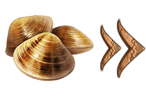 |
【イベント限定概念礼装】 【スキル強化＆霊基再臨素材】 【霊基再臨素材】 【その他アイテム】 |
◆おてがる銅鏡(どうきょう)で交換可能なアイテム◆
 |
【イベント限定概念礼装】 【スキル強化＆霊基再臨素材】 【霊基再臨素材】 【その他アイテム】 |
◆ミニ銅鐸(どうたく)で交換可能なアイテム◆
 |
【イベント限定概念礼装】 【スキル強化＆霊基再臨素材】 【その他アイテム】 |
期間限定イベント「超古代新選組列伝 ぐだぐだ邪馬台国2020」開催！
経験値さんによる公式サポートマンガ「Fate/ぐだぐだオーダー」が期間限定でまたもや復活いたしました！

その他にも、期間限定「ぐだぐだ邪馬台国2020ピックアップ召喚」を同時開催！
詳細については、下記バナーよりご確認ください。
■「ぐだぐだ邪馬台国2020ピックアップ召喚」詳細情報